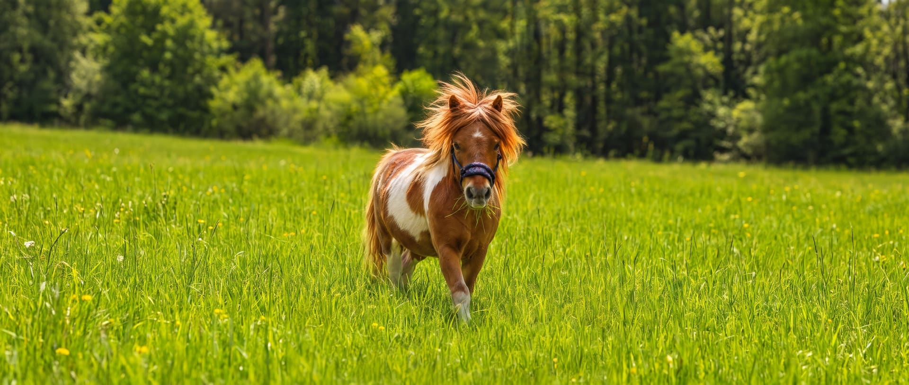
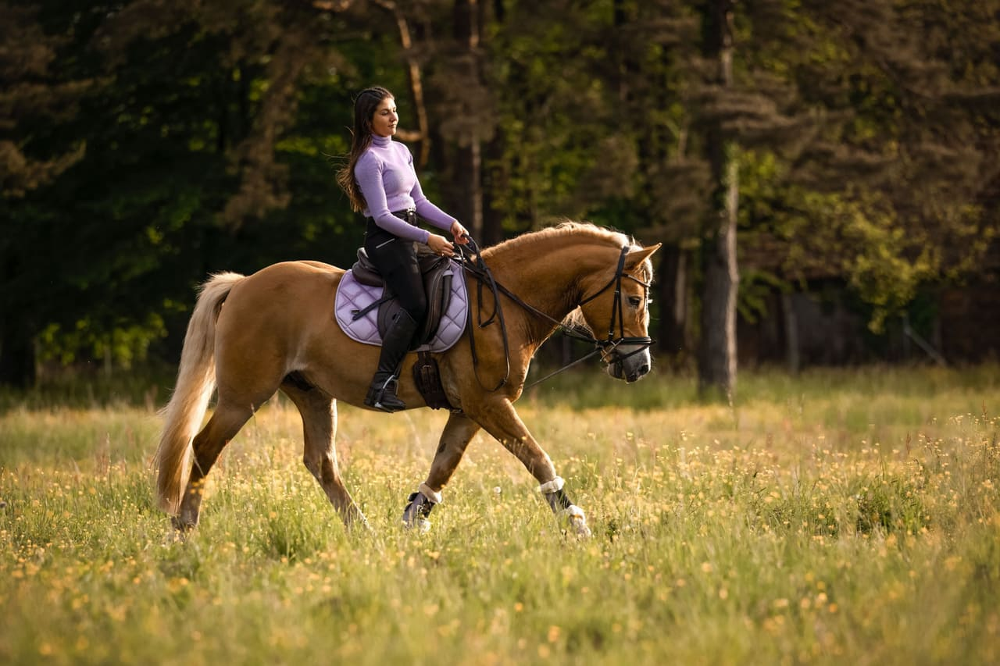

Podaci o ovom konju još nisu upisani. Upisuju se u datoteku data/krdo.json.

Udruga Vis Solis · Gornja Bistra
Hipoterapija i aktivnosti pomoću konja.
Vis Solis je udruga iz Gornje Bistre kraj Zagreba. Provodimo hipoterapiju i aktivnosti pomoću konja te organiziramo šetnje i druženja s konjima, za djecu i odrasle.
Anabela, naš šareni poni
01 — Hipoterapija
Terapija koja počinje korakom konja.
Hipoterapija je oblik fizioterapije u kojem terapeut koristi trodimenzionalno kretanje konja u hodu.
Ritmično i ponavljajuće kretanje konjskih leđa prenosi se na zdjelicu i trup korisnika te potiče reakcije ravnoteže, posturalnu kontrolu i prilagodbu pokreta.
- Za djecu i odrasle, nakon individualne početne procjene.
- Termin traje 30 minuta; preporučuje se dolazak jednom do dvaput tjedno.
- Vodi je hipoterapeut, uz vodiča konja i pripremljenog terapijskog konja.


02 — Aktivnosti pomoću konja
Jahanje, skrb o konju i rad s tla.
Aktivnosti pomoću konja terapijska su aktivnost za djecu, mlade i odrasle koja spaja trening jahanja, učenje o konjima i njihovoj skrbi te rad s konjem s tla.
Prilagođene su sposobnostima i potrebama svakog korisnika. Kroz neposredan kontakt s konjem razvijaju se motoričke, emocionalne, socijalne i komunikacijske vještine.
- Termin traje 60 minuta: priprema konja, zatim jahanje ili rad s konjem.
- Jahanje nije obavezno; aktivnosti se mogu provoditi i s tla.
- Prethodno iskustvo s konjima nije potrebno.
03 — Ostalo u našoj ponudi
Osim terapija provodimo i druge aktivnosti.
Organiziramo i šetnje te druženja s konjima, tijekom cijele godine.
- Rekreativno jahanje
- Šetnje na konjima
- Dječji ljetni kampovi
- Obiteljski dani i dani otvorenih vrata
- Advent na konjima
Termine i najave događanja objavljujemo na društvenim mrežama.
Udruga će naknadno opisati svaku od ovih aktivnosti.
Šetnja, kamp ili druženje s konjima (bez djece)
04 — Kako početi
Od prvog upita do prvog termina.
-
Javite nam se
Nazovite, pošaljite poruku na WhatsApp ili ispunite obrazac. Dovoljno je par rečenica o tome što vas zanima.
-
Upoznajemo se
Za hipoterapiju dogovaramo početnu procjenu, na koju ponesite noviji nalaz liječnika. Za aktivnosti pomoću konja dovoljan je kratak razgovor o potrebama i mogućnostima korisnika.
-
Prvi termin
Dogovaramo ritam dolazaka koji vam odgovara. Dođite u dugim hlačama i zatvorenoj obući; prethodno iskustvo s konjima nije potrebno.
05 — Naše krdo
Jedanaest konja i dva ponija, svaki sa svojom naravi.
Povucite red ulijevo ili udesno i konji će potrčati. Kliknite konja da ga upoznate.
Povucite red ili koristite strelice.


06 — O nama
Vis solis: snaga sunca.
Udruga Vis Solis nastala je iz ljubavi prema konjima, prijateljstva i zajedničke želje da ono što nam konji pružaju podijelimo s drugima.
Udrugu su u kolovozu 2024. godine osnovale četiri žene, Viktorija, Sunčica, Gabrijela i Lorena, s idejom da stvore mjesto na kojem će konji postati most između ljudi, podrške i novih mogućnosti.


Tim
-
Fotografija stiže
Viktorija
Predsjednica udruge · instruktorica aktivnosti pomoću konja za osobe s invaliditetom
Dugogodišnja jahačica i trenerica, nekada i natjecateljica u preponama. Vlasnica je četiriju konja, a život posvećuje pravilnom i nježnom radu s konjima te podršci djeci i osobama s teškoćama.
-
Fotografija stiže
Sunčica
Hipoterapeut
Ostvarila je svoj san radeći s djecom u Specijalnoj bolnici za kronične bolesti dječje dobi Gornja Bistra i povezala ga s ljubavlju prema konjima u našoj udruzi. Vlasnica je pet konja koji su uz nju od rođenja: uz konje je doslovno odrasla i živi ih svaki dan.
-
Fotografija stiže
Gabrijela
Instruktorica aktivnosti pomoću konja za osobe s invaliditetom
Cijeli je život trenirala kao dresurna jahačica, a danas živi svoj rančerski san uz svoja dva konja i rad s djecom, što joj ispunjava srce.
-
Fotografija stiže
Lorena
Instruktorica aktivnosti pomoću konja za osobe s invaliditetom
Dugogodišnja jahačica čije iskustvo i energija donose novu snagu našem radu.
-
Fotografija stiže
Josipa
Fizioterapeutkinja
Svoj je poziv ostvarila u radu s djecom, a kod nas ga je dodatno obogatila terapijama uz pomoć konja.
07 — Kontakt
Dogovorite termin.
Nazovite, pošaljite poruku ili ispunite obrazac. Javit ćemo vam se i zajedno dogovoriti prvi dolazak.
- Telefon i WhatsApp
- +385 95 555 4789 Sunčica · WhatsApp
- +385 99 837 8093 Viktorija
- Zovite svaki dan osim nedjelje.
- udrugavissolis@gmail.com
- Radno vrijeme
- Po dogovoru, uz prethodnu najavu termina. Nedjeljom ne radimo.
- Gdje nas naći
- U parku Specijalne bolnice Bistra
Bolnička ulica 21, Gornja Bistra
Otvori na karti
Hvala, upit je stigao.
Javit ćemo vam se čim prije. Ako je hitno, nazovite nas na +385 95 555 4789.